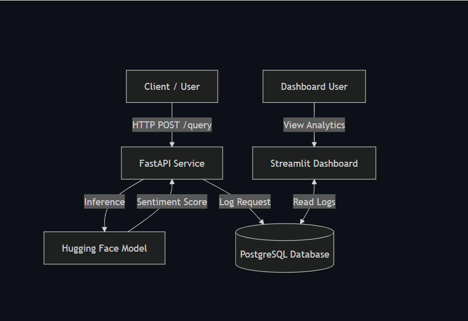

Microservice Logging and Analytics
A production-ready microservice for real-time sentiment analysis, complete with an analytics dashboard and persistent interaction database. Three containerized services orchestrated by Docker Compose (repo).